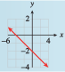

Subsection 5.7 A Formula for Slope
We have defined the slope of a line to be the ratio \(m = \dfrac{\Delta y}{\Delta x}\) as we move from one point to another on the line. So far, we have computed \(\Delta y\) and \(\Delta x\) by counting squares on the graph, but this method is not always practical. All we really need are the coordinates of two points on the graph.
Subscripts.
We will use subscripts to distinguish the two points:
We denote the coordinates of \(P_1\) by \((x_1, y_1)\) and the coordinates of \(P_2\) by \((x_2, y_2)\text{.}\)
Now consider a specific example. The line through the two points \(P_1 (2, 9)\) and \(P_2 (7,-6)\) is shown at left. We can find \(\Delta x\) by subtracting the \(x\)-coordinates of the points:
In general, we have
and similarly
These formulas work even if some of the coordinates are negative; in our example
By counting squares down from \(P_1\) to \(P_2\text{,}\) we see that \(\Delta y\) is indeed \(-15\text{.}\) The slope of the line is
We now have a formula for the slope of a line that works even if we do not have a graph.
Two-Point Slope Formula.
The slope of the line passing through the points \(P_1 (x_1, y_1)\) and \(P_2 (x_2, y_2)\) is given by
Example 5.7.15.
Compute the slope of the line above using the points \(Q_1 (6, -3)\) and \(Q_2 (4, 3)\text{.}\)
We substitute the coordinates of \(Q_1\) and \(Q_2\) into the slope formula to find
This value for the slope, \(-3\text{,}\) is the same value we found above.
Checkpoint 5.7.16.
Find the slope of the line passing through the points \((2, -3)\) and \(( -2, -1)\text{.}\)
Sketch a graph of the line by hand.
\(\dfrac{-1}{2} \)
- 
It will also be useful to write the slope formula with function notation. Recall that \(f (x)\) is another symbol for \(y\text{,}\) and, in particular, that \(y_1 = f (x_1)\) and \(y_2 = f (x_2)\text{.}\) Thus, if \(x_2 \ne x_1\text{,}\) we have this formula.
Slope Formula in Function Notation.
Example 5.7.17.
The figure shows a graph of
- Compute the slope of the line segment joining the points at \(x = 1\) and \(x = 4\text{.}\)
- Compute the slope of the line segment joining the points at \(x = 2\) and \(x = 5\text{.}\)
- We set \(x_1 = \alert{1}\) and \(x_2 = \alert{4}\) and find the function values at each point.\begin{equation*} f (x_1) = f (\alert{1}) = \alert{1}^2 - 6(\alert{1}) = -5 \end{equation*}\begin{equation*} f (x_2) = f (\alert{4}) = \alert{4}^2 - 6(\alert{4}) = -8 \end{equation*}Then\begin{equation*} m = \frac{f (x_2) - f (x_1)}{x_2 - x_1} =\frac{-8 - (-5)}{4 - 1}=\frac{-3}{3}= -1 \end{equation*}
- We set \(x_1 = \alert{2}\) and \(x_2 = \alert{5}\) and find the function values at each point.\begin{equation*} f (x_1) = f (\alert{2}) = \alert{2}^2 - 6(\alert{2}) = -8 \end{equation*}\begin{equation*} f (x_2) = f (\alert{5}) = \alert{5}^2 - 6(\alert{5}) = -5 \end{equation*}Then\begin{equation*} m = \frac{f (x_2) - f (x_1)}{x_2 - x_1} =\frac{-5 - (-8)}{5 - 2}=\frac{3}{3}= 1 \end{equation*}
Note that the graph of \(f\) is not a straight line and that the slope is not constant.
Checkpoint 5.7.18.
The figure shows the graph of a function \(f\text{.}\)
- Find \(f (3)\) and \(f (5)\text{.}\)
- Compute the slope of the line segment joining the points at \(x = 3\) and \(x = 5\text{.}\)
- Write an expression for the slope of the line segment joining the points at \(x = a\) and \(x = b\text{.}\)
\(f (3) = 2, ~f (5) = 8\)
\(3\)
\(\dfrac{f(b)-f(a)}{b-a} \)